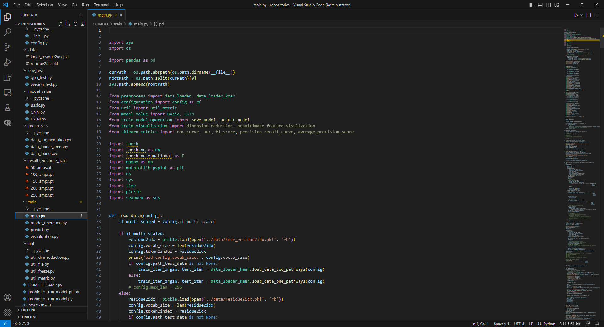
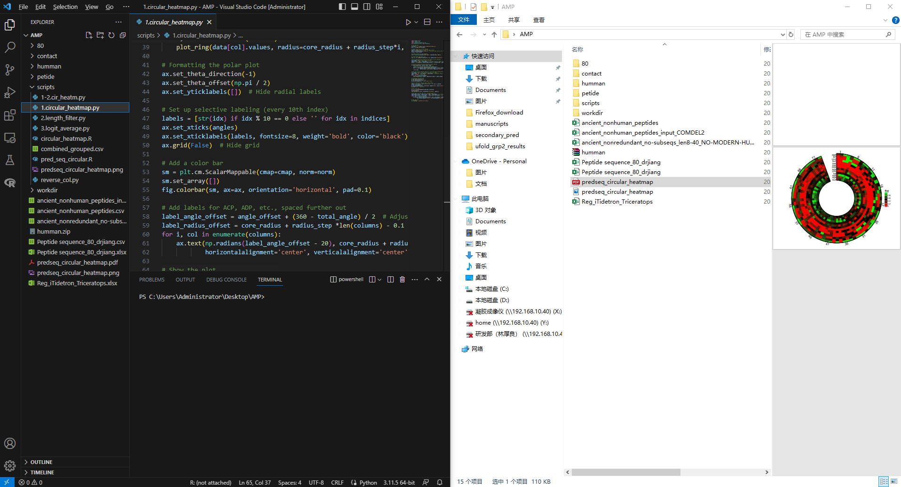

Lab notebooks
Lab Notebook: Enhancing Antimicrobial Ability of Lactobacillus plantarum Using Deep Learning and Directed Evolution Technologies
Project Title
Strengthening the Antimicrobial Ability of Lactobacillus plantarum Using Deep Learning and Directed Evolution Technologies
Experiment 1: Deep Learning Model Development
Objective:
Develop a deep learning model based on BiLSTM networks for accurate prediction of bio-functional peptides (BioPeps) across 13 categories, with a focus on antimicrobial peptides (AMPs).
Materials and Methods:
1. Data Collection:
- Compiled a dataset of 17,572 peptide sequences from public databases (e.g., BioPepDB, SATPdb, CancerPPD).
- Filtered sequences to ensure diversity and quality, removing redundancy and sequences with unusual amino acids.
- Feature Extraction:
-
Employed feature extraction techniques including:
- Amino Acid Composition (AAC)
- Dipeptide Composition (DPC)
- BLOSUM62 embeddings
- Physicochemical properties from AAindex
-
Model Architecture:
- Developed three BiLSTM models: BiLSTM, BiLSTM_Attention, and BiLSTM_Predictor.
-
Integrated multiple features and evaluated 2,076 feature combinations for optimal prediction.
-
Training and Validation:
- Split data into training (80%) and testing (20%) sets.
- Used Adam optimizer with a learning rate of 0.001.
- Evaluated model performance using Accuracy, Precision, Sensitivity, and AUROC.
Results:
- Achieved 94.8% accuracy in blinded testing and 88% accuracy in experimental validation for AMP prediction.
- Best performance obtained with BiLSTM_Predictor for AMP, AHP, and DeP categories.
Conclusion:
The developed BiLSTM-based model significantly outperformed existing models in predicting BioPeps, demonstrating strong potential for practical applications.
Experiment 2: Dataset Collection and Processing
Objective:
Curate a comprehensive dataset for BioPeps prediction and refine data quality for improved model training.
Materials and Methods:
1. Data Sources:
- Collected sequences from databases like BioDADPep, CancerPPD, and AHTPDB.
- Integrated high-throughput AMP-screening data.
- Data Curation:
- Removed sequences with over 90% identity to reduce redundancy.
-
Excluded peptides containing non-standard amino acids (e.g., B, J, O, U, X, Z).
-
Negative Control Selection:
- Selected negative control peptides from UniProt, ensuring similar length distribution to BioPeps.
Results:
- Final dataset: 17,553 peptides, including 13 BioPeps categories and negative controls.
- Successfully balanced dataset to reduce bias in model training.
Conclusion:
The curated dataset provides a robust foundation for training the deep learning model, ensuring high-quality and diverse peptide sequences.
Experiment 3: Cell-Free AMP Synthesis Platform Development
Objective:
Develop a cell-free synthesis platform for rapid and scalable production of AMPs.
Materials and Methods:
1. System Setup:
- Utilized E. coli cell extract-based protein expression system.
- Prepared a 50 μL reaction mixture containing:
- 50 mM HEPES buffer (pH 7.2)
- 1.2 mM ATP, 0.85 mM UTP, GTP, CTP
- 34 μg/mL folinic acid, 170 μg/mL E. coli tRNA
- 5 μg/mL T7 RNA Polymerase, 15 μg/mL PCR product
- 2 mM for each of the 20 amino acids
- Reaction Conditions:
- Incubated at 37°C for 4-6 hours.
-
Monitored AMP synthesis using SDS-PAGE and BCA Protein Assay.
-
Yield Optimization:
- Tested various reaction volumes and component concentrations.
- Achieved optimal yields of 0.5-2.1 g/L.
Results:
- Successfully produced AMPs in a cell-free system with high yields.
- AMPs exhibited strong antimicrobial activity against target pathogens.
Conclusion:
The cell-free synthesis platform provides a scalable and efficient method for producing AMPs, suitable for industrial applications.
Experiment 4: Directed Evolution of Lactobacillus plantarum
Objective:
Enhance the antimicrobial properties of L. plantarum through directed evolution and high-throughput screening.
Materials and Methods:
1. Mutagenesis:
- Applied atmospheric and room temperature plasma (ARTP) mutagenesis to generate a diverse mutant library of L. plantarum.
- Screening:
- Used fluorescence-activated droplet sorting (FADS) to isolate mutants with elevated AMP production.
-
Designed a fluorescence-based sensor system with GFP10-E. coli and GFP11-B. subtilis strains.
-
Validation:
- Tested isolated mutants against a panel of 7 pathogenic bacteria and fungi.
- Measured antimicrobial activity and organic acid production.
Results:
- Isolated three mutant strains (M1, M2, M3) with significantly enhanced antimicrobial activity.
- Mutants exhibited up to 2-fold higher bacteriostatic effects compared to the wild-type strain.
Conclusion:
Directed evolution combined with FADS effectively improved L. plantarum strains, making them suitable candidates for industrial antimicrobial applications.
Experiment 5: Industrial Application Testing
Objective:
Evaluate the effectiveness of enhanced L. plantarum strains in food preservation and pharmaceutical applications.
Materials and Methods:
1. Food Preservation:
- Tested in soy sauce, coconut juice, bread, and lean meats.
- Monitored microbial growth and product quality over time.
- Pharmaceutical Testing:
- Assayed cell-free synthesized AMPs against multi-drug resistant bacteria.
- Conducted minimum inhibitory concentration (MIC) tests.
Results:
- Enhanced L. plantarum strains effectively inhibited spoilage and pathogenic microorganisms in various food matrices.
- Cell-free synthesized AMPs showed potent activity against drug-resistant bacteria.
Conclusion:
The enhanced strains and cell-free AMPs have broad applications in food and pharmaceutical industries, offering natural alternatives to synthetic preservatives and antibiotics.
Notes and Observations
- Continuous optimization of model parameters improved prediction accuracy.
- ARTP mutagenesis was crucial for generating diverse mutants.
- The combination of computational predictions and experimental validation significantly reduced time and cost in identifying effective AMPs.
Future Directions
- Expand the dataset to include more diverse BioPeps sequences.
- Further optimize the cell-free synthesis platform for other peptide categories.
- Conduct large-scale validation of L. plantarum strains in real-world industrial settings.
Experiment record
Screenshot of development of the deep-learning based BioPep identifier

Screenshot of figure plotting
